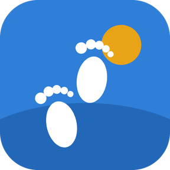

Hadda wuxuu ku jiraa App Store
Taleefankaagu wuu sugayaa ilaa aad socoto.
Socod wuxuu xiraa apps-ka aad doorato, wakhtiga aad doorato, ilaa aad dhammayso socod ama jimicsi. Waxaa loo sameeyay Muslimiinta, waana Soomaali, Ingiriisi iyo Carabi.
Ka soo deji App StoreBilaash iPhone-ka · Premium waa ikhtiyaari
- Is-diiwaangelin ma jirto
- Xayeysiis iyo raadraac ma jiraan
- Wicitaannadu marwalba way shaqeeyaan
Sida uu u shaqeeyo
Dooro apps-ka iyo wakhtiga
Dooro apps-ka subaxaaga qaata iyo wakhtiga ay xirnaanayaan, ilaa 6 saacadood.
Soco ama jimicso
Socod wuxuu si toos ah u tiriyaa tallaabooyinkaaga isagoo adeegsanaya dareemaha dhaqdhaqaaqa iPhone-ka, ama daqiiqadaha jimicsiga ee Apple Health iyo jimicsiga guriga ee app-ka ku jira.
Apps-kaagu way furmaan
Gaar hadafkaaga, way furmaan. Xataa haddaadan gaarin, qufulku marwalba wuu dhammaadaa marka wakhtigaagu dhammaado.
Qiime fudud
Bilaash
$0
Qufulka maalinlaha ah oo dhan: dooro apps-ka, soco ama jimicso, kadibna fur.
Premium
$0.99 bishii ama $4.99 sannadkii
Wuxuu ku daraa dhammaan tartamada, taariikhda 30-ka maalmood iyo calaamado gaar ah.
Qorshaha sannadka wuxuu yeelan karaa bil tijaabo bilaash ah haddaad xaq u leedahay. Qiimayaashani waa kuwa Maraykanka; qiimaha dalkaaga waxaa lagu tusayaa app-ka ka hor intaadan iibsan. Wakhti kasta ka jooji Dejinta iPhone-ka. Shuruudaha rukhsadda
Su'aalaha
Socod ma xiri karaa wicitaannada ama xaaladaha degdegga?
Maya. Wicitaannada iyo xaaladaha degdegga ah marwalba way shaqeeyaan.
Maxaa dhacaya haddaanan maanta socon karin?
Qufulku marwalba wuu dhammaadaa dhammaadka wakhtiga aad dejisay, haddaad socotay iyo haddaadan socon.
Maxay Socod ku samaysaa xogtayda?
Is-diiwaangelin, xayeysiis iyo raadraac midna ma jiro, weligeenna xog ma iibinno. Apps-ka aad xirto iyo xogta Apple Health waxay ku jiraan iPhone-kaaga oo keliya. Kaydinta horumarka ee kooxaha waa ikhtiyaari: waad dami kartaa ama tirtiri kartaa Dejinta. Siyaasadda Asturnaanta
Ma u baahanahay Apple Watch?
Maya. iPhone-kaagu wuu tiriyaa tallaabooyinkaaga. Daqiiqadaha jimicsiga ee Apple Watch ama app jimicsi oo u qora Apple Health sidoo kale way tirsadaan.
Sideen u joojiyaa Premium?
Dejinta iPhone-ka → magacaaga → Subscriptions → Socod. Tirtiridda app-ku ma joojiso rukhsadda.
Socod ma ku jiraa dalkayga?
Socod wuxuu ku jiraa App Store-ka iPhone dalal badan, laakiin weli kuma jiro Midowga Yurub.
Berri subax bilow
Ama ka raadi “Socod” App Store-ka iPhone-kaaga.
Su'aalo? U qor myccharlotte+socod@gmail.com